S11 · Level 3 — Tim virtual
Setujui desain sebelum implementasi
Architect menulis ADR; Bima menyetujui; Implementer bekerja setelah itu dan meminta review.
Status latihan: Usulan ADR dibaca di sesi Architect · belum disetujui; tidak ada PR implementasi. Ikuti langkah · Ulangi dari awal.
Masalah yang dihadapi
Logika retry approval dibahas terlambat dan bisa memicu kerja ulang.
Kerugian: Satu perubahan kecil melebar jadi siklus desain dan review ulang.
Masalah pada baseline
docs/adr/README.md
Lihat potongan atau catatan sumber
ADR: konteks → alternatif → keputusan → risiko → acceptance criteria.Solusi dan alur
Architect menulis ADR; Bima menyetujui; Implementer bekerja setelah itu dan meminta review.

- Architect menulis draf ADR.
- Bima meminta revisi atau menyetujui.
- Setelah disetujui, Implementer membuka draft PR.
- Security Reviewer memeriksa hasil desain dan implementasi.
Lihat sumber Mermaid

flowchart TB
architect["Architect"] -->|Tulis keputusan| adr["Draf ADR"]
adr -->|Ajukan untuk review| lead{"Bima setuju?"}
lead -->|Tidak: minta revisi| architect
lead -->|Ya: tunjuk task| implementer["Implementer"]
implementer -->|Ajukan draft PR| reviewer["Security Reviewer"]
classDef ai fill:#efe6ff,stroke:#7354a4,color:#382459
classDef gate fill:#fff2dc,stroke:#955b17,color:#5b3711
class architect,implementer,reviewer ai
class lead gateLangkah demo
Buka isu dan kontrak yang harus dijaga
Buka issues/S11.md di Explorer. Untuk klaim Rp1.250.000, Manager mengalihkan ke Finance. Tes juga bisa memastikan keputusan ganda mengikuti gate status.
npm test -- tests/unit/api.test.js Perbesar S11-before.png
Perbesar S11-before.pngSumber GitHub · Buka Issues → issue #11. Baca acceptance criteria tentang retry, status, dan audit sebelum mendelegasikan. Tulis keputusan sebelum coding
Pada GitHub Copilot Agents pilih architect dan arahkan ke issue latihan. Nama target docs/adr/0001-approval-bertahap.md. Tulis alternatif, status, retry dan audit, tanpa menyunting src/.
Buat draf ADR 0001 untuk approval, retry, pencegahan perubahan ganda dan audit. Sertakan alternatif dan kriteria tes. Jangan menulis implementasi. Perbesar S11-architect-proposal.png
Perbesar S11-architect-proposal.pngSumber GitHub · Buka sesi Architect → View full plan. Bandingkan konflik status dan transaksi dengan kunci idempotensi. Jangan klik Approve plan and start work sampai Tech Lead meninjau. Ini bukan PR ADR. Handoff setelah persetujuan manusia
Tech Lead baca Files changed, setujui ADR melalui review. Baru beri implementer tautan ADR dan tes. Minta review defensif pada draft implementasi tanpa merge.
docs/adr/README.md
Sebelum dan sesudah
Perbesar S11-before.pngS11-after.png| Bagian | Sebelum | Sesudah / target |
|---|---|---|
| Perilaku | Template ADR ada; baseline sudah menguji handoff Manager → Finance. | Target: ADR 0001 menjelaskan retry/status/audit dan disetujui sebelum draft implementasi. |
| Bukti visual | Ada tangkapan GitHub. | Belum direkam. |
| Keputusan | Peserta membaca keadaan awal. | Manusia memeriksa hasil sebelum meneruskan. |
Manfaat
- Risiko ditangkap saat mengganti desain masih murah.
Bukti dan sumber
Template issue S11 · Data latihan dan pengukuran.
 Perbesar S11-local-result.png
Perbesar S11-local-result.pngBukti GitHub live
Architect memberikan usulan ADR di dalam sesi saja. Belum disetujui dan belum ada PR ADR atau implementasi.
Perbesar S11-before.pngPerbesar S11-architect-proposal.png3 layar yang belum direkam
S11-01-adr-pr.pngS11-02-impl-pr.pngS11-after.png
Ulangi latihan
Tinggalkan checkout yang sudah diedit dan buat checkout baru dari v0-baseline. Jangan pakai git reset --hard atau git clean pada direktori kerja bersama.
npm run reset -- --fresh